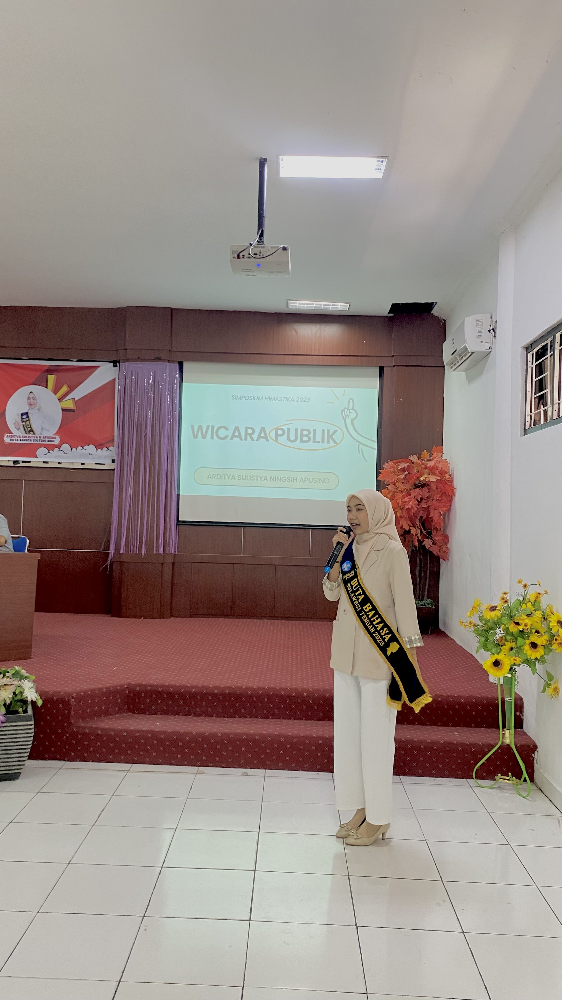
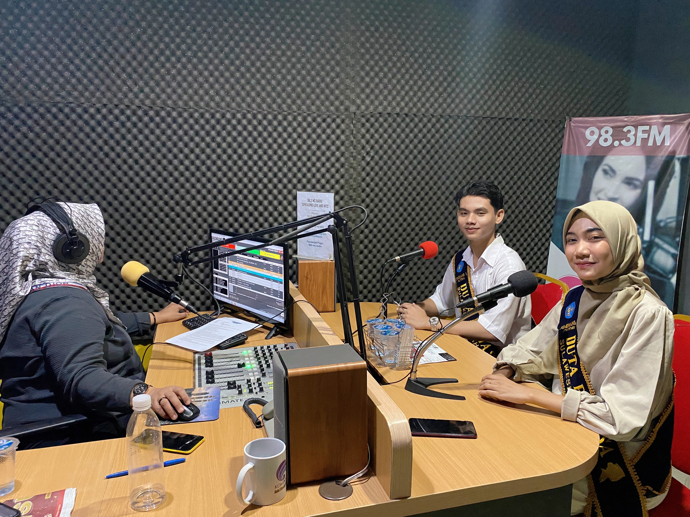
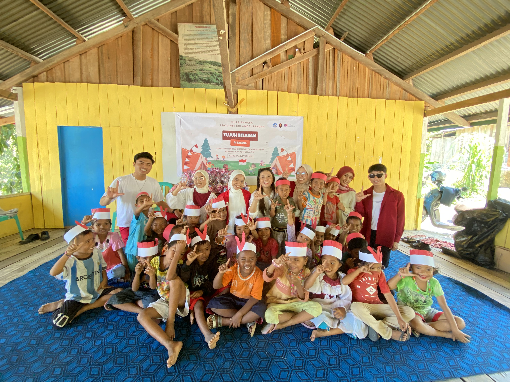
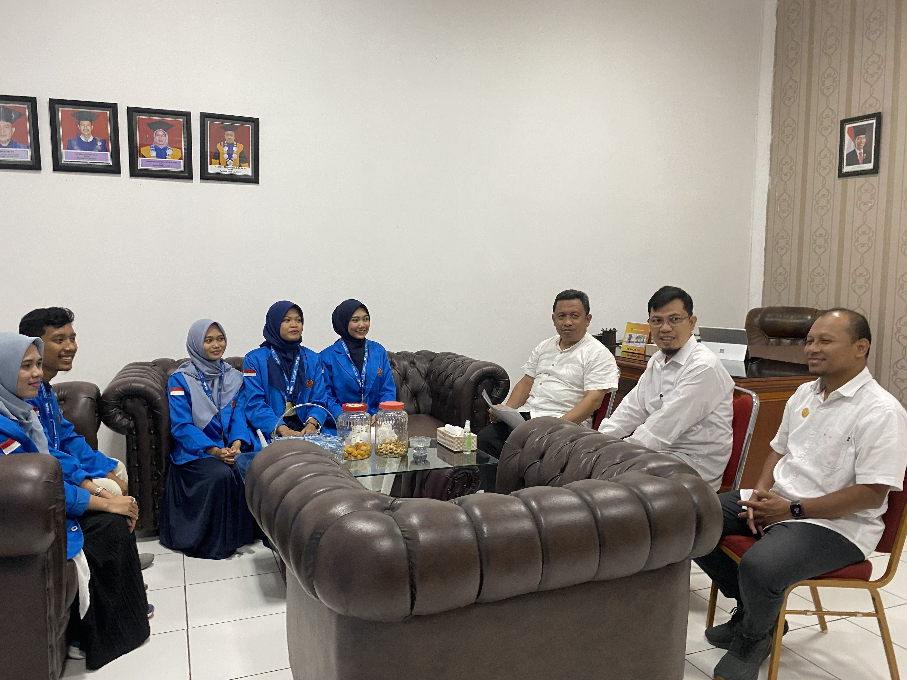
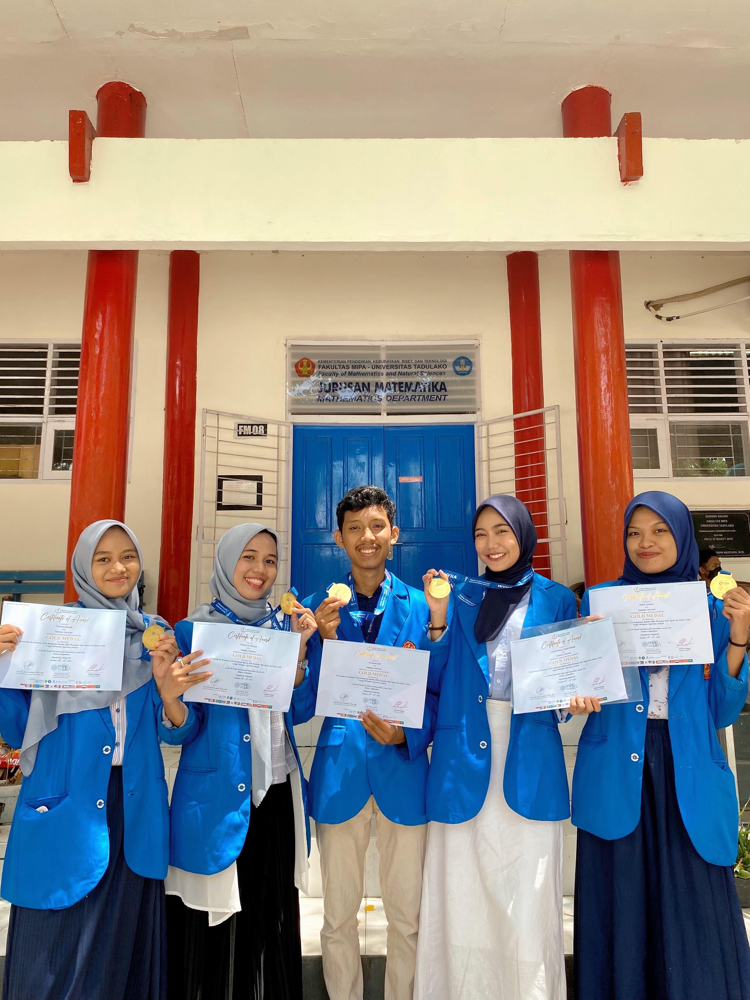
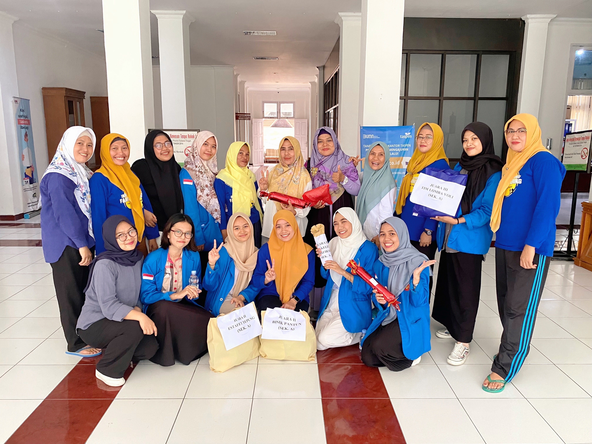
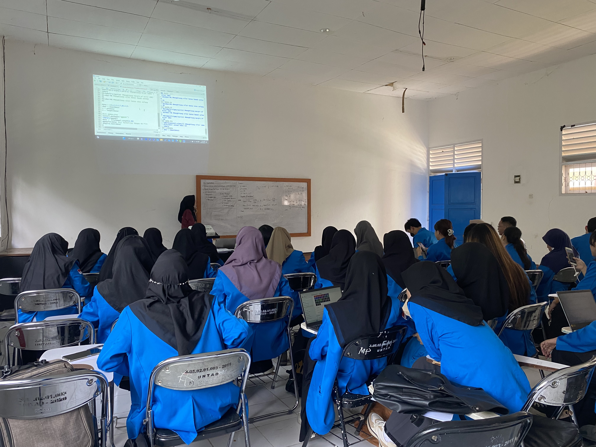

✦ Career
Professional Experience
Cross-industry exposure spanning BUMN manufacturing, state insurance, government auditing, research leadership, and academia.

🏭images/exp-sig.jpg
Marketing & Commercial Data Analyst Intern
● Current
PT Semen Indonesia (Persero) Tbk — SIG · BUMN · South Jakarta · Dec 2025 – Present
- Built real-time Market Intelligence Dashboard monitoring 798,839 sales transactions (R Shiny + Excel) — daily visibility into brand performance, competitor positioning, and regional market dynamics across Indonesia
- Conducted brand cannibalization analysis between main and fighting brands using Share of Wallet, volume movement, and average market growth — identifying regions where internal competition undermined portfolio contribution
- Built Price Elasticity & Revenue Simulation Model using multiple regression (ASP → volume, market share, revenue per province) enabling what-if pricing scenario analysis for commercial teams
- Delivered monthly KPI reports and demand forecasting summaries for senior management across Sales, Logistics, and Strategy divisions

🏦images/exp-askrindo.jpg
Underwriting Analyst Intern
Oct – Dec 2025
PT Asuransi Kredit Indonesia (ASKRINDO) · BUMN · Palu
- Performed financial ratio analysis for 50+ prospective clients — evaluating liquidity, solvency, and profitability to produce risk profiles used as primary references by senior underwriters
- Managed policy data validation with 100% accuracy across 30+ underwriting cases; reduced file review time by 20% through systematic OJK-compliant due diligence procedures

🎤images/exp-duta-mic.jpg
Language Ambassador — Central Sulawesi Province
Jun 2023 – Jan 2024
Badan Pengembangan dan Pembinaan Bahasa · Kemendikbudristek · 3rd Place — Duta Bahasa 2023
- Awarded 3rd Place (Harapan III) in the Duta Bahasa provincial selection — representing Central Sulawesi's commitment to national language excellence and regional language preservation
- Developed a trilingual digital dictionary (Indonesian–Kaili Ledo–English) achieving a 4× increase in vocabulary knowledge after a single session — piloted with 42 users, now live as a Streamlit web application
- Led a literacy program in Salena village — taught 30 children foundational literacy and numeracy through play-based learning in a remote underserved community
- Represented Central Sulawesi at provincial public speaking events, radio broadcasts, and cultural language advocacy programs

📻

👩🏫

🇲🇾images/exp-ijamcsiix.jpg
Co-Research Team Leader — Poverty Data Clustering & PCA
🥇 Gold Medal
Universiti Teknologi MARA (UiTM) · Remote · Selangor, Malaysia · Oct – Nov 2023
- Co-led data science research on poverty disparities in Central Sulawesi — uncovering a clear divide between Kota Palu and 12 surrounding regencies, producing a framework for targeted regional policymaking
- Developed and deployed an interactive R Shiny dashboard enabling visualization of poverty group classifications using PCA + Average Linkage hierarchical clustering (PC1+PC2 explain 82.67% variance)
- Applied dimensionality reduction to transform complex, multivariate socioeconomic data into actionable insights for policymakers
- Awarded Gold Medal at i-JaMCSIIX 2023 at Universiti Teknologi MARA (UiTM) Cawangan Melaka, Malaysia

🥇images/exp-wyiia.jpg
Research Team Leader — ML-Based Time Series Forecasting
🥇 Gold Medal
Indonesian Young Scientist Association (IYSA) · Remote · Yogyakarta · Aug – Oct 2023
- Led development of a machine learning–based time series forecasting model for USD/IDR currency fluctuations using Facebook Prophet — achieving 99.993% accuracy (MAPE 0.0065%) on test data
- Applied trend decomposition, holiday effects, and parameter tuning to optimize forecast precision across 166 training data points
- Directed end-to-end research lifecycle: data scraping, model development, and technical defense for an international jury in Yogyakarta
- Awarded Gold Medal at WYIIA 2023 (World Youth Invention and Innovation Award) — Mathematics Category

🏛️images/exp-inspectorate.jpg
Program, Finance & Asset Management Intern
Jul – Aug 2023
Regional Inspectorate of Central Sulawesi Province · Government · Palu
- Validated and reconciled 1,000+ financial records across 5 government departments via SIPD RI, identifying 30+ discrepancies — ensured 100% audit readiness
- Performed target vs. actual budget variance analysis to support cross-regional financial planning for 20+ budget sub-activities

👩🏫images/exp-teaching.jpg
Assistant Lecturer — Statistical Methods & Experimental Design
Jan 2023 – Jul 2024
Tadulako University · Palu · 2 Semesters · 100+ Students
- Guided 100+ undergraduate students across two semesters in R, Python, and Minitab — covering regression analysis, ANOVA, factorial designs, Latin square, and model diagnostics
- Authored two lab modules adopted as primary reference for 3 subsequent cohorts — explanation time ↓20%, average scores ↑15%, correction errors ↓10%